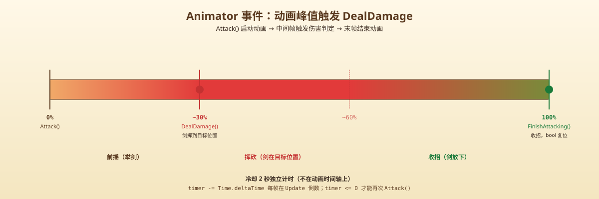
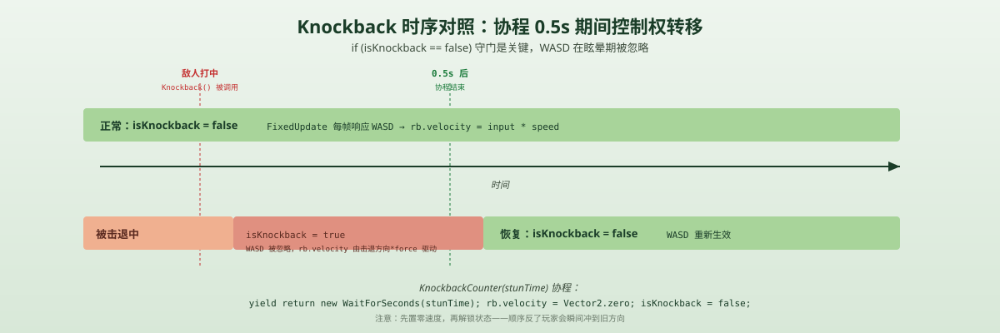

一句话说清这天的内容
把「敌人能打我」补成完整的「我也能打敌人，而且真有反馈」：玩家按 Slash 挥剑 → 武器范围检测 → 命中扣血；敌人被攻击后回击玩家 → 玩家被击退 + 短暂眩晕、不能操作 → 协程倒数恢复控制。
四个脚本的关系
Day 4 末尾敌人能主动追、能打了，但玩家这边完全是被挨打的。今天把玩家武装起来：
| 脚本 | 角色 | 行数 | 关键能力 |
|---|---|---|---|
PlayerMovement | 改 | 42→66 | + isKnockback 标志、Knockback()、KnockbackCounter() 协程、Slash 输入 |
Player_Combat | 新 | 53 | Attack() 冷却、DealDamage() 武器范围 |
Enemy_Health | 新 | 25 | currentHealth/maxHealth、ChangeHealth(int) |
Enemy_Combat | 改 | 16→37 | 攻击时调 PlayerMovement.Knockback()，注释掉 OnCollisionEnter 旧版 |
调用链（玩家打敌人）：Slash 输入 → PlayerMovement → Player_Combat.Attack() → anim.SetBool("isAttacking", true) → 动画事件触发 DealDamage() → OverlapCircleAll → Enemy_Health.ChangeHealth(-1)
调用链（敌人打玩家）：Enemy_Combat.Attack() → OverlapCircleAll → PlayerHealth.ChangeHealth + PlayerMovement.Knockback(transform, force, stunTime) → 协程倒数恢复
玩家挥剑：Player_Combat 53 行
三个 public 字段是 Inspector 里挂的：
attackPoint：武器根部的 Transform（一般是子物体，跟随挥剑动画移动）weaponRange：判定半径，Inspector 拖动调enemyLayer：LayerMask，只检测这一层（避免误伤其他 collider）damage：单次伤害cooldown = 2f：攻击间隔
public Animator anim;
public float cooldown = 2f;
private float timer;
private void Update()
{
if (timer > 0) timer -= Time.deltaTime;
}
public void Attack()
{
if (timer <= 0)
{
anim.SetBool("isAttacking", true);
timer = cooldown;
}
}设计：动画 + 判定的解耦
Attack() 只做「开始挥剑」的事：设动画 bool + 重置 cooldown。真正的伤害判定不在 Attack() 里，而在 DealDamage()，由 Animator 的事件 在挥剑动画到某一帧时调用。
这是 ARPG / 格斗游戏的标准做法：动画决定「什么时候砍到」，代码决定「砍到谁、扣多少血」。如果以后改动画师调了攻击节奏，只需要重做动画事件，不用动脚本。

实际判定：OverlapCircleAll 跟前两篇一样
public void DealDamage()
{
Collider2D[] enemies = Physics2D.OverlapCircleAll(
attackPoint.position, weaponRange, enemyLayer
);
if (enemies.Length > 0)
{
enemies[0].GetComponent<Enemy_Health>().ChangeHealth(-damage);
}
}跟 Day 4 敌人攻击、Day 3 主动感知用的是同一个 API（Physics2D.OverlapCircleAll），区别只在：
- 中心：
attackPoint（跟着剑走，不是敌人身体中心） - 范围：
weaponRange（1 个单位，敌人攻击是 0.5） - 过滤：
enemyLayer（敌人攻击过滤playerLayer）
💡 坑 1：enemies[0] 只取第一个
当前实现只打 enemies[0]。如果一次挥剑范围里有两个敌人（贴脸排排站），第二个没事。
为什么这么写：教程先做一打一，多目标以后用 for 循环遍历。完整版会写成：
foreach (var e in enemies) e.GetComponent<Enemy_Health>().ChangeHealth(-damage);但那样写前要先想清楚：会不会一击秒两个算不算「连击」？需不需要「只打最近一个」？这是设计问题不是技术问题。
收尾
public void FinishAttacking()
{
anim.SetBool("isAttacking", false);
}FinishAttacking() 由 Animator 事件在挥剑动画的最后一帧调用，把 bool 设回 false。关键：Attack() 不设回 false，因为冷却 2 秒期间角色还在做收招动作。结束判定只听动画事件。
敌人血量：Enemy_Health 25 行
比想象中短——因为血量这事的核心逻辑就是「+= 一个数，然后判断 <= 0」。
public int currentHealth;
public int maxHealth;
private void Start()
{
currentHealth = maxHealth;
}
public void ChangeHealth(int amount)
{
currentHealth += amount;
if (currentHealth > maxHealth) currentHealth = maxHealth;
if (currentHealth <= 0)
{
Destroy(gameObject);
}
}设计：ChangeHealth 接正负数
ChangeHealth(-damage) 扣血、ChangeHealth(+potion) 加血——一个方法搞定两种操作。比拆成 TakeDamage() 和 Heal() 两个方法少了一半调用点，调用方也不必记哪个是哪个。
💡 坑 2：Destroy(gameObject) 是瞬间的
Destroy(gameObject) 不是「死亡动画播完再消失」，是「这一帧就从场景里移除」。后果：
- 正在播放的死亡动画会突然中断
- 协程、
OnDestroy之类的清理逻辑要小心
现在还没死亡动画，所以看不出问题。下一天加 Dying 状态时就要做：先播完动画再 Destroy。
💡 坑 3：currentHealth 没设初始值
maxHealth 在 Inspector 里设了，currentHealth 没设。Start() 里会 currentHealth = maxHealth，所以运行起来没问题。但是：在 Start() 跑之前的那一帧（比如 Awake 阶段），currentHealth 是 0。
如果哪个脚本在 Awake 里调用了 ChangeHealth(0)（测一下边界），会立刻 currentHealth <= 0 → Destroy 自己。概率极低但理论上会触发。生产代码常加一行兜底：
public int currentHealth = 1; // 兜底，防止 Start 之前被误杀击退 + 眩晕：PlayerMovement 多了 24 行
这是 Day 5 最值得讲的「状态切换」代码：
private bool isKnockback; // 旧代码里没有
private void Update()
{
if (Input.GetButtonDown("Slash"))
{
player_Combat.Attack();
}
}
void FixedUpdate()
{
if (isKnockback == false) // 关键：被击退时跳过整段移动
{
float horizontal = Input.GetAxis("Horizontal");
// ... 老的移动代码
rb.velocity = new Vector2(horizontal, vertical) * speed;
}
}
public void Knockback(Transform enemy, float force, float stunTime)
{
isKnockback = true;
Vector2 direction = (transform.position - enemy.position).normalized;
rb.velocity = direction * force;
StartCoroutine(KnockbackCounter(stunTime));
}
IEnumerator KnockbackCounter(float stunTime)
{
yield return new WaitForSeconds(stunTime);
rb.velocity = Vector2.zero;
isKnockback = false;
}状态切换：bool 标志 vs 状态机
之前 Day 3 讨论过敌人用 enum 状态机（Idle / Chasing / Attacking），为什么玩家这里用一个简单 bool？

- 玩家只有「正常」和「被击退」两种移动模式，bool 就够
- 敌人有 3+ 个状态互相跳转，enum + switch 更清晰
- 能用简单结构就先用简单的，等不够用再升级
关键：if (isKnockback == false) 守门
被击退的 0.5 秒里，玩家按 WASD 是不应该动的——但 Unity 不会自动帮你停。用 FixedUpdate 顶部的 if 把整段移动代码包起来，包括翻转、animator 参数、rb.velocity 赋值，全跳过。
只在协程结束后（isKnockback = false）才恢复控制权。
KnockbackCounter 协程
WaitForSeconds(stunTime) 是真实时间，不是帧数。stunTime = 0.5 就是 0.5 秒，跨帧稳定。
💡 坑 4：协程在 GameObject Destroy 后继续跑
KnockbackCounter 倒数完会执行 rb.velocity = Vector2.zero。但如果玩家在被击退期间被秒杀（比如敌人一下打 100 血），gameObject 被 Destroy 了——协程会怎样？
Unity 的协程在 GameObject 销毁时会自动停止，所以不会报错。但是 StartCoroutine 内部用的是 IEnumerator，如果你在编辑器里手动 stop coroutine 但 GameObject 没销毁，会留下半截协程。
生产代码里可以加保护：
IEnumerator KnockbackCounter(float stunTime)
{
yield return new WaitForSeconds(stunTime);
if (this == null) yield break; // 防御 GameObject 已销毁
rb.velocity = Vector2.zero;
isKnockback = false;
}（实际 Unity 的协程已经会处理，但显式判断让逻辑更清晰。）
武器判定可视化：OnDrawGizmosSelected
两个脚本都有：
private void OnDrawGizmosSelected()
{
Gizmos.color = Color.red;
Gizmos.DrawWireSphere(attackPoint.position, weaponRange);
}只在 Inspector 选中本物体时才画。在场景视图里选中 Player 能看到一个红圈代表挥剑范围、选中 Enemy 能看到它的攻击范围。不选中就不画——避免在大型场景里画一堆 Gizmos 把场景视图搞糊。
整体设计思路
1. 一次完整战斗的时序
玩家按 Slash → 1 帧后 Attack() 被调用 → 动画开始播 → 0.2 秒后（动画某一帧）DealDamage() 被事件触发 → 敌人扣 1 血（如果还活着）→ 敌人状态机切到 Chasing → 敌人靠近 → 敌人 Attack() → 玩家扣 1 血 + Knockback → 0.5 秒眩晕 → 玩家恢复控制
2. 状态机 vs bool 标志的取舍
| bool 标志 | enum 状态机 | |
|---|---|---|
| 适用 | 2 种状态 | 3+ 种状态 |
| 调试 | 难看（看不到当前是哪个状态） | 直观（state == Chasing） |
| 扩展 | 加一个状态要加一个 bool | 加一个值就行 |
| 互斥保证 | 手动维护 | 手动维护 |
教程前期多用 bool 没问题，Day 3 敌人已经从 bool 升级到了 enum。今天玩家用 bool，因为只有 2 个状态。
3. Animator 事件比 Update 检测更省
如果用 Update 检测「动画播到 50% 就 DealDamage」，得手动算时间窗口。用 Animator 事件（在动画时间轴上点一下插一个回调）让美术自己控制攻击判定点，改动画不用动代码。
五个明天要补的洞
- 玩家挥剑动画不转向：当前
PlayerMovement的 Flip 逻辑在FixedUpdate，而挥剑是Update触发的——左键挥剑瞬间面朝方向还是上次的。要让Player_Combat.Attack()触发时主动 Flip 一次。 - 死亡没有动画：
Destroy(gameObject)一瞬间消失，没有「倒下」过渡。 - 多敌人连击：
enemies[0]只取第一个，要加foreach。 - 击退方向锁死：
isKnockback期间角色朝向也锁了（因为 Flip 被if包含）。被击退时角色应该面朝敌人飞出去的方向。 - 血量条：现在只能脑内算「还有几血」，玩家看不到自己或敌人的血量。要加 World Space Canvas 血条。
一句话总结
今天补完了「能打有反馈」的下半部分：Player_Combat 用 Animator 事件在动画峰值做 OverlapCircleAll，Enemy_Health 用 ChangeHealth(int) 一招吃正负数，PlayerMovement.Knockback + 协程把「被击中」做成一个明确的「失能期」。整套循环的输入、判定、反馈三件套都齐了。